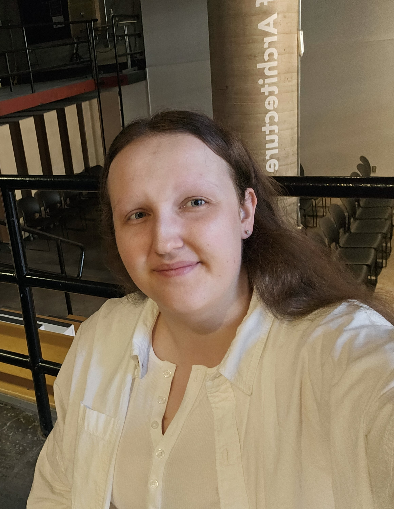
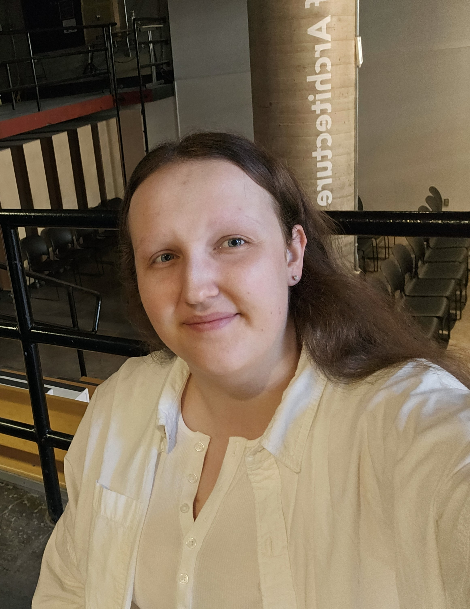

Rebecca Sondermeyer
Assignment Portal
I graduated from the Bachelor of Architectural Studies Conservation & Sustainability program at Carleton University in 2020.
I worked at many firms in the summers between classes including AECOM as a Junior BIM Coordinator, SOTA as an Acoustic Consultant, and Heritage Grade as a Heritage Consultant.
I have 4 years experience working as a Building Science Consultant, most proudly completing dozens of building condition assessments for the city of Ottawa public park buildings,
and assisting the Sustainability team to put together applications for LEED and Green Globes.
I have a passion for sustainable design and seek an opportunities to support my community, and the environment.
I can speal both English and French.
My interests include volunteering for animal rescues, playing piano, singing, skating and golfing.
I graduated from the Bachelor of Architectural Studies Conservation & Sustainability program at Carleton University in 2020. I worked at many firms in the summers between classes including AECOM as a Junior BIM Coordinator, SOTA as an Acoustic Consultant, and Heritage Grade as a Heritage Consultant. I have 4 years experience working as a Building Science Consultant, most proudly completing dozens of building condition assessments for the city of Ottawa public park buildings, and assisting the Sustainability team to put together applications for LEED and Green Globes. I have a passion for sustainable design and seek an opportunities to support my community, and the environment. I can speal both English and French. My interests include volunteering for animal rescues, playing piano, singing, skating and golfing.